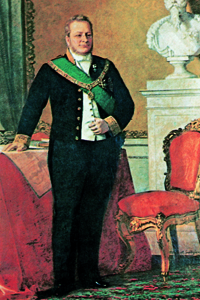
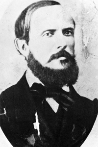
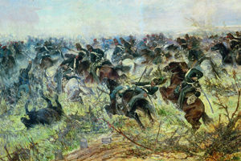
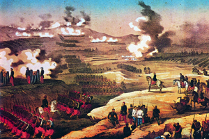
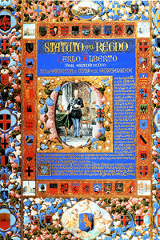

Lezione 16  L'Unità d'Italia
L'Unità d'Italia

-
95
295
-
270
520
-
200
450
-
85
415
-
305
325
-
75
355
-

TORINO
Il conte Camillo Benso di Cavour in un ritratto del pittore Tranquillo Cremona della metà del secolo XIX; sulla mensola del camino poggia un busto in marmo di Vittorio Emanuele II.
-

PISACANE
Il rivoluzionario napoletano Carlo Pisacane tenta di far scoppiare, con un atto insurrezionale, una rivoluzione antiborbonica nel meridione d'Italia. Scrive: "Se il paese non risponderà al nostro appello, non senza maledirlo, sapremo morire da forti, seguendo la nobile falange de' martiri italiani". Il tentativo fallisce, Pisacane muore sotto il fuoco dei Borboni che lo consideravano nient'altro che un "brigante".

MONTEBELLO
La raffinata pittura di Giovanni Fattori, tra i principali esponenti del movimento artistico dei "Macchiaioli" si esercita in una serie dedicata alle principali battaglie risorgimentali; questo dipinto del 1862 restituisce bene l'atmosfera di confusione e violenza del combattimento di Montebello.

SOLFERINO
Le devastazioni dell'artiglieria e la tensione dell'attesa sono quasi palpabili in questa litografia di L. Vignolo che raffigura le battaglia di Solferino del 1859.

REGNO DI SARDEGNA
Camillo Benso conte di Cavour diventa primo ministro e apre una nuova stagione politica non più fondata sulle insurrezioni, ma sugli accordi diplomatici a livello europeo.
Nel 1855 il Piemonte aderisce infatti all'alleanza franco-britannica nella guerra di Crimea e nel 1858 si accorda con Napoleone III a Plombières: Cavour cede Nizza e la Savoia alla Francia e Napoleone III promette il suo appoggio contro l'Austria.MILANO
1859: scoppia la seconda guerra di indipendenza tra piemontesi e austriaci. Grazie all'aiuto dell'esercito francese, Milano e l'intera Lombardia vengono annesse al Piemonte..